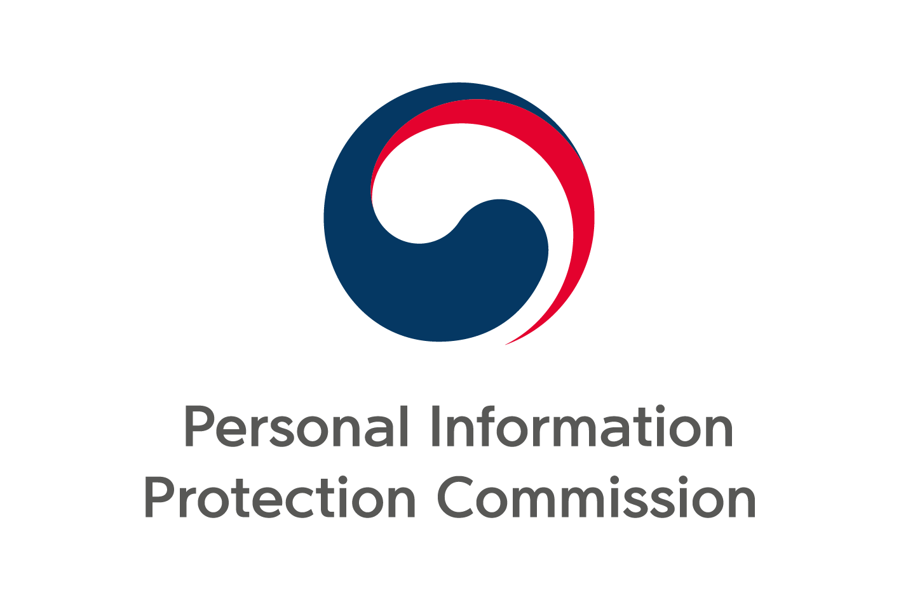

Cybersecurity Monitoring Analyst · D-tective
Personal Information Protection Commission (PIPC), Republic of Korea
I am an undergraduate student in Artificial Intelligence at Yonsei University. My research focuses on AI security, safety, and privacy. Current interests & recent work include:
Contact: louisenyk@yonsei.ac.kr (or konayoung0284@gmail.com)
* Equal contribution · † Corresponding author
Yoonsung Jung*, Sunghun Jung*, Louise Nayeong Koh*, and Yongjun Choi
NeurIPS 2026 Workshop AXIOM: Foundations of Efficient Deep Learning · Poster
PDFLouise Nayeong Koh*†, Yaechan Lee*, Myeongjong Lee*, Doyeon Kim, Juyoung Park, Seunggyu Kim, Inseo Kim, Chaerin Jung, and Hyogon Ryu†
NeurIPS 2026 Workshop Trustworthy AI for Good (AI4GOOD) · Poster
PDFHyeongyeong Kim, Jaeu Lee, and Louise Nayeong Koh
Conference on Information Security and Cryptography – Winter 2026 (CISC-W’26) · Poster

Personal Information Protection Commission (PIPC), Republic of Korea
Korea Internet & Security Agency (KISA), Republic of Korea
Developed token-level loss masking for privacy-sensitive tokens during LLM fine tuning. In experiments with Pythia-160M, LoRA, and the Enron email dataset, the method reduced PII extraction by up to 70.8% versus the baseline.
Python · PyTorch · LoRA · Privacy
CODEKACS · National Intelligence Service · Institute of International Studies, SNU